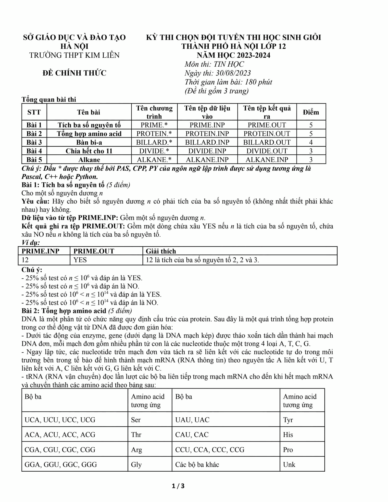
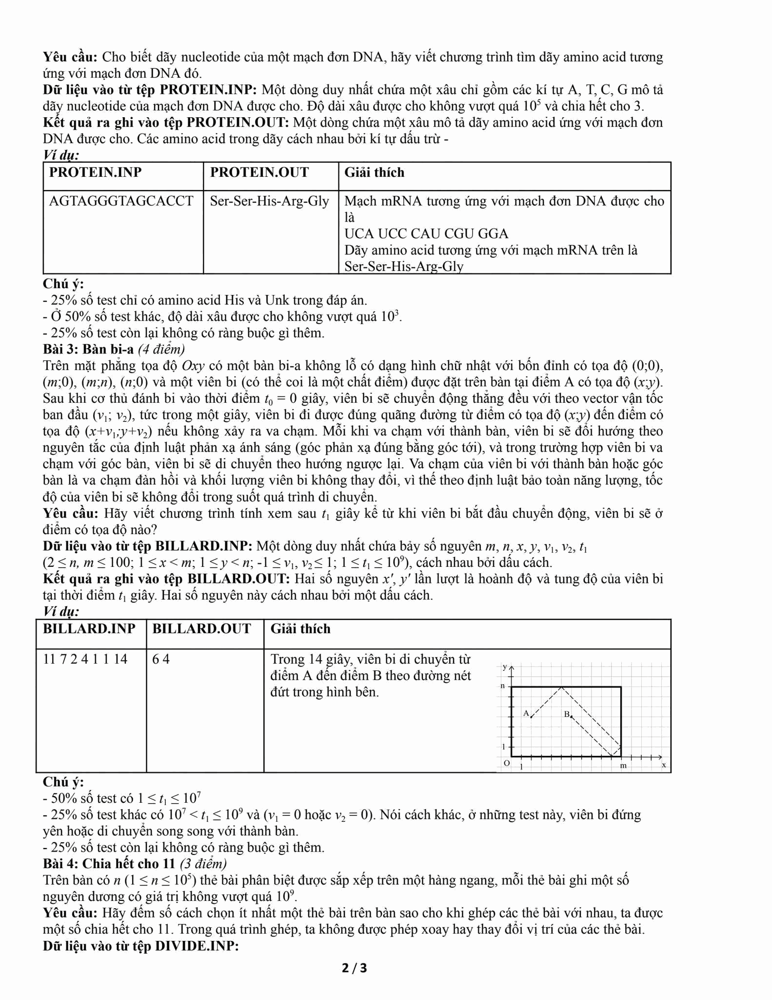
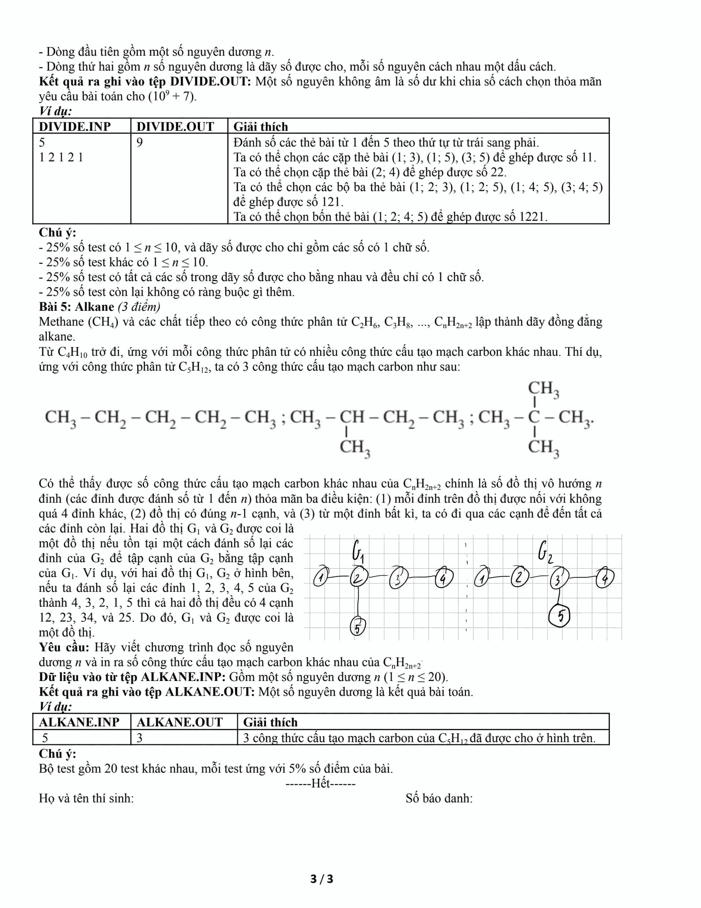

OPEN SOURCE · BỘ ĐỀ 30/08/20235 bài thi.
5 bài thi.
5 lời giải.
Một hành trình
tư duy thuật toán.
Bộ giải đề chọn đội tuyển học sinh giỏi Tin học lớp 12 — THPT Kim Liên, Hà Nội. Từ phân tích số nguyên tố đến đếm cấu trúc phân tử bằng lý thuyết đồ thị.
HSG2023∑THINK · CODE · VERIFY
01 PRIME× 3
02 PROTEINATCG
03 BILLARD↗ ↘
04 DIVIDE% 11
05 ALKANECₙH₂ₙ₊₂
5 CHỦ ĐỀ · 1 ĐỀ THI · ∞ CÁCH TƯ DUY
01 — TỔNG QUAN
Đề thi trong một cái nhìn.
Tổng hợp yêu cầu, điểm số và mức độ khó tương đối. Bạn có thể mở mã nguồn hoặc mô phỏng trực tiếp từng bài.
Bản đồ độ khó
ĐỘ KHÓ TƯƠNG ĐỐI / 10Độ khó là nhận định sư phạm, không phải phân bố điểm thi thực tế.
02 — TUYỂN TẬP LỜI GIẢINăm bài toán.
Năm bài toán.
Năm cách suy nghĩ.
Chọn một bài để xem tóm tắt, thuật toán, độ phức tạp, minh họa, ví dụ và liên kết tới lời giải C++17.
BÀI 01 · PRIME · 5 ĐIỂM
Xem mã C++17 ↗Tích ba số nguyên tố
Đề yêu cầu
Cách giải tối ưu
TIME O(√n)SPACE O(1)
Ví dụ gốc
12YESMINH HỌA · PRIMEHình minh họa thuật toán
03 — PHÒNG THÍ NGHIỆMĐừng chỉ đọc.
Đừng chỉ đọc.
Hãy thử.
Thay đổi dữ liệu và quan sát đầu ra ngay trên trình duyệt. Các mô phỏng được viết bằng JavaScript độc lập để học tập, không chạy mã C++ phía server.
Đây là công cụ minh họa. Để chấm chính thức, hãy dùng chương trình C++17 và các tệp test độc lập bên dưới.
OUTPUT
YES
04 — BỘ TEST MỞTest đủ sâu.
Test đủ sâu.
Kiểm chứng đủ rộng.
420 test đầu vào khác nhau, hợp lệ theo đúng ràng buộc đề (0 đầu vào trùng lặp), đầu ra sinh từ thuật toán tham chiếu độc lập. 100 test cho bốn bài đầu và 20 test cho Alkane (vì chỉ có 20 đầu vào hợp lệ phân biệt).
01 · PRIME100Biên, lũy thừa, số lớn, YES/NOZIP ↓02 · PROTEIN100Đủ 64 codon, Unk, chuỗi 99.999ZIP ↓03 · BILLARD1009 cặp vận tốc, phản xạ, t=10⁹ZIP ↓04 · DIVIDE100Brute force, n=100.000, moduloZIP ↓05 · ALKANE20Toàn bộ n=1…20, đủ miền giá trịZIP ↓
Quy tắc kiểm chứng
Xem manifest ↗Mỗi test chứa tệp NAME.INP và NAME.OUT, có manifest SHA-256. Ngoài 420 test phát hành, mã đã trải qua 1.209 lượt đối chiếu tự động trên WIN11-181 (bản sửa I/O ngày 14/11/2026) và thử nghiệm sanitizer độc lập trong hồ sơ lịch sử.
05 — NGUỒN ĐỀ
Trở về đề gốc.
Ba ảnh người dùng cung cấp được lưu trong repository để đối chiếu. Bản Word/PDF giữ nguyên bố cục ảnh scan; bản đề tóm tắt là văn bản có thể chỉnh sửa.

TRANG 01Đề thi · PRIME · PROTEINPhóng to ↗

TRANG 02PROTEIN · BILLARD · DIVIDEPhóng to ↗

TRANG 03DIVIDE · ALKANEPhóng to ↗
TẢI TÀI LIỆU
Đọc, lưu hoặc in.
PDF/DOCX ảnh gốc để giữ nguyên bố cục; DOCX bản biên tập để chỉnh sửa nội dung tóm tắt đề.
!
Hai điểm cần lưu ý khi đọc đề
Bảng trang 1 in tên đầu ra ALKANE thành ALKANE.INP (đúng phải là ALKANE.OUT); trang 2 in một đỉnh bàn bi-a là (n;0) thay vì (0;n). Tài liệu gốc được giữ nguyên, phần hướng dẫn giải dùng cách hiểu đã đính chính.
06 — ĐỌC SÂU HƠNĐọc lời giải.
Đọc lời giải.
Hiểu bản chất.
Repository mở có chứng minh, phân tích thời gian và bộ nhớ, mã nguồn C++17, công cụ sinh test và các báo cáo kiểm toán độc lập.